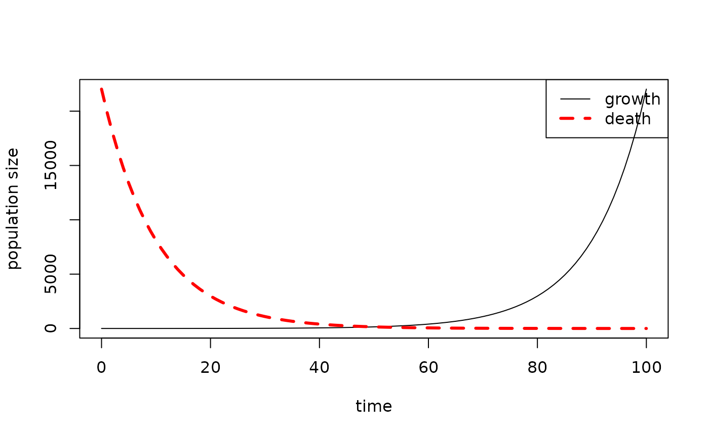

R Notebook
December 20 2022
notebooks.RmdFormatting R Notebook reports
This page contains information to help you generate reports for your practical coursework and final project. In the examples below, the contents of your scripts are shown on the left, with the compiled report on the right.
Text
You can write any text you like after the #' comment
characters to describe your program. If you’re using RStudio,
you can just press Enter every time you get to the dotted
vertical line in the window so that your R text doesn’t scroll off the
page unnecessarily. You automatically get the right comment characters
so you can just carry on typing. However, there are lots of things you
can do to format the text.
For instance, you can italicise and bold
text easily if you want to. Information on the some of the basic rules
for writing text (not R) are on daringfireball,
though most stuff is explained below too. This format is called
Markdown, and it describes everything that happens after the
#' symbols, though those symbols are nothing to do with
Markdown, they are just how to get Markdown into
R.
You need to press enter twice to start a new paragraph, and when you’re starting a new style of text, like a list or a header you need to have a blank comment line before it to make sure that the words don’t appear in the previous paragraph by accident.
#' **first paragraph in bold**
#'
#' *second paragraph in italics*
#'first paragraph in bold
second paragraph in italics
Lists
#' Some text followed by an empty line,
#' then a list.
#'
#' 1. Lists are started by numbers,
#' letters, or symbols (`-`, `+`,
#' or `*`)
#' 2. Write an equation by encapsulating
#' an expression in `$`
#' 3. For instance:
#' - $D = x^2$
#' - $E = sin(q)$
#' 4. Note that you need an indent to
#' make a sub-list
#' a. Like this!
#'
#' More text after an empty line.
#'Some text followed by an empty line, then a list.
- Lists are started by numbers, letters, or symbols (
-,+or*) - Write an equation by encapsulating an expression in
$ - For instance:
- \(D = x^2\)
- \(E = sin(q)\)
- Note that you need an indent to make a sub-list
- Like this!
More text after an empty line.
Code
R comments just appear as normal, but outputs appear with
## before them.
# A useful comment
x <- 2
y <- (3 + x)^2
y
# A useful comment
x <- 2
y <- (3 + x)^2
y
## [1] 25If you don’t like that, you can remove the ## before the
output like this:
#+ comment=""
x <- 2
x + 3x <- 2
x + 3
[1] 5Note: If you want to remove the
##from your entire report, you can putknitr::opts_chunk$set(comment = "")at the top of your script.
#' Text can also include R, so
#' $y = (3+x)^2$ =
{{y}}
#' gives you the number calculated in R.
#'Text can also include R, so \(y =
(3+x)^2\) = 25 gives you the number calculated in
R.
Figures
Here’s a very basic figure generated using the base R
plot() function:
You can specify the size of the plot and add a caption like this:
Note: The
#+options don’t need to be split over multiple lines. We did that here to avoid text wrapping in the code block.
Note also: You can centre the figure using
#+ fig.align="center". We haven’t shown that here because it doesn’t work with the two-column formatting.
plot_populations()
The RPiR package uses the plot_simple() and
plot_populations() functions that automate some of this
functionality. In addition, base plot() arguments can be
passed to for extra customization, see ?base::plot for more
details. For example, you can generate a plot like this:
library(RPiR)
results1 <- data.frame(time = 0:100, growth = exp((0:100) / 10))
plot_populations(results1)
Add an additional line with a different style, width, and colour, like this:
results1 <- data.frame(time = 0:100, growth = exp((0:100) / 10))
results2 <- data.frame(time = 0:100, death = exp(seq(10, 0, by = -0.1)))
plot_populations(results1)
plot_populations(results2, lty = 2, lwd = 3, col = "red", new.graph = FALSE)Then fix the legend for the multi-line plot (making sure the order of
the elements in the legend, col, and
lty arguments matches the order in which you plot the
lines!), like this :
results1 <- data.frame(time = 0:100, growth = exp((0:100) / 10))
results2 <- data.frame(time = 0:100, death = exp(seq(10, 0, by = -0.1)))
plot_populations(results1, with.legend = FALSE)
plot_populations(results2, lty = 2, lwd = 3, col = "red", new.graph = FALSE)
legend("topright",
legend = c("growth", "death"),
lty = c(1, 2),
lwd = c(1, 3),
col = c("black", "red"))
Note: You can specify the location of the legend using x-y coordinates or strings such as
"topright", see?legendfor more details.
Potential problems
When compiling your report, you might encounter an error along the lines of:
Error in plot.xy(xy.coorrds(x, y), type = type, ...): plot.new has not been
called yet Calls: <Anonymous> ... plot_populations -> <Anonymous> ->
lines.default -> plot.xy Execution haltedIt might be because your code looks something like this:
results1 <- data.frame(time = 0:100, growth = exp((0:100) / 10))
results2 <- data.frame(time = 0:100, death = exp(seq(10, 0, by = -0.1)))
# Generate a figure
plot_populations(results1)
#' Some nice descriptive text for my report
# Try to plot another line on the same figure
plot_populations(results2, lty = 2, lwd = 3, col = "red", new.graph = FALSE)The error occured because the first call to
plot_populations() is separated from the second call to
plot_populations() by a text block #'. When we
compile the report, the first and second code blocks are called in
isolation, so the second call to plot_populations() isn’t
aware of the first plots’ existance.
To solve this problem, do this:
results1 <- data.frame(time = 0:100, growth = exp((0:100) / 10))
results2 <- data.frame(time = 0:100, death = exp(seq(10, 0, by = -0.1)))
plot_populations(results1)
plt <- recordPlot()
#' Some nice descriptive text for my report
replayPlot(plt)
plot_populations(results2, lty = 2, lwd = 3, col = "red", new.graph = FALSE)recordPlot() stores the plot generated in the first code
chunk and saves it in plt, afterwhich
replayPlot(plt) recovers the plot generated in the first
code chunk, so that
plot_populations(results2, lty = 2, lwd = 3, col = "red", new.graph = FALSE)
can then be called.
Equations
n <- 5
x <- rnorm(n)
sum(x) / n
#' Here is the equation we just
#' calculated written out neatly, inline
#' with the text:
#' $\text{mean}(x) = 1/n \sum_{i=1}^n x_i$
#'
#' We can also write an equation on its
#' own line:
#'
#' $$y = \frac{x_i}{2x^2 + 3}$$
#'
#' and write greek symbols and accents:
#'
#' $$\gamma = \bar{\alpha} \times \beta$$
#'
# And here's another code block
mean(x) / var(x)Here is the equation we just calculated written out neatly, inline with the text: \(\text{mean}(x) = 1/n \sum_{i=1}^n x_i\)
We can also write an equation on its own line: \[y = \frac{x_i}{2x^2 + 3}\]
and write greek symbols and accents:
\[\gamma = \bar{\alpha} \times \beta\]
Note: This complex syntax for equations is LaTeX. If you haven’t seen it before you don’t need to use it, but there is lots of information on writing formulae here, and there are some specific things you can put in a formula here.